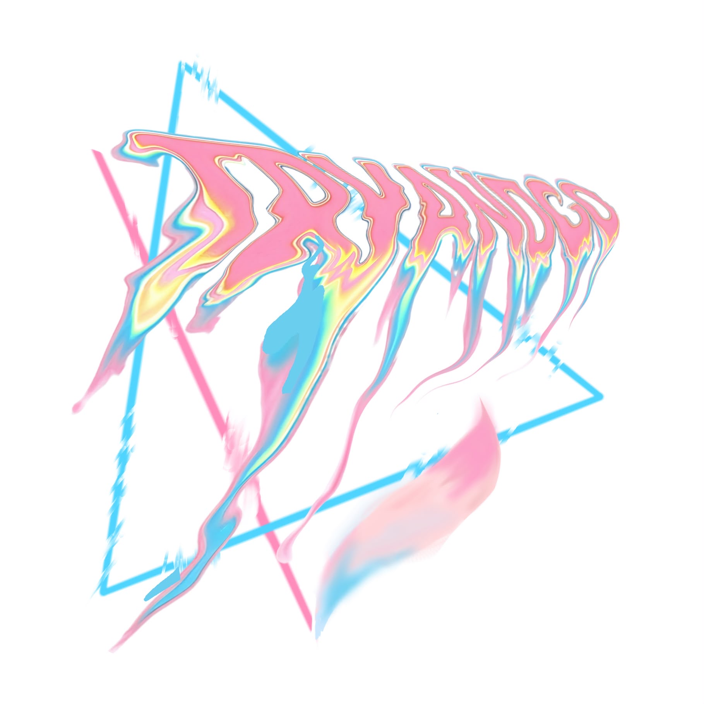

Try and Go!
我們是2號候選內閣「Tryandgo」—— Try and Go 諧音三角形的英文「Triangle」。
我們希望學校、學生和學生會三者一條心，三者都是不可或缺的一部分。
而我們的成員大多在學校擔任重要職責，具備豐富的實戰經驗。
我們有多於 200間 商戶優惠，包括購物、課堂、服裝、工作坊等不同類別的優惠。當中更包括獨家優惠！
我們與多間學校學生會有聯校合作，爭取在當選後舉辦不同的聯校活動。包括：
tryandgosu@gmail.com